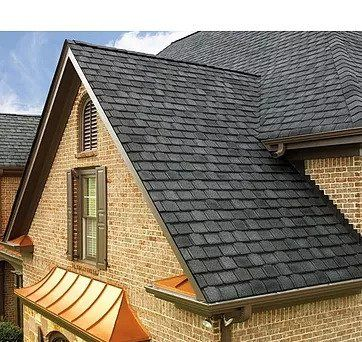
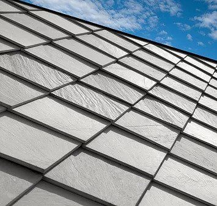

Roofing

Asphalt

Tile

Metal

Slate

At Pearson Roofing, we strive to be a roofing contractor who has built the trust of our entire community. Our reputation is our most important asset, and we are proud to be one of the highest rated residential roofing contractors around. With decades of experience, our highly-trained staff is experienced in all types of roofing materials. Your Pearson Roofing representative can help you determine which type of roof shingles that will complement your home and work best for your budget. Below are the most common types of shingles for the DFW Metroplex:
Your Gutters are an integral piece of your home’s well-being. They serve to control the flow of rainwater to protect your roof, walls, foundation and landscape. When large hail hits your home, many times your gutters are damaged or destroyed. Pearson Roofing provides the highest quality installation and materials for your gutter system. Our skilled gutter system experts have been attaching seamless rain gutters and downspouts for decades and we continue to provide 100% satisfaction to our homeowners. For more details about seamless rain gutters and the advantages they can provide for you, call the experienced installers at Pearson Roofing!

Pearson Roofing has decades of experience in all facets of repair, from glass replacement, screen repair, vinyl bead repair, and full window replacement when the window is beyond repair. With our wide range of window suppliers, there is no doubt we can match or upgrade your new windows to the existing windows of your home.

A damaged shingle may allow water to seep through the roof causing additional damage to the roof deck, support structure, interior walls, or windows, and can cause leaking, staining on walls and flooding inside your home as well as your exterior. Pearson Roofing has the skill and expertise to provide you with the right interior and exterior painting solutions for your home or office. You spend a great deal of time in your home, and a high-quality interior paint job can contribute to a bright and vibrant atmosphere. Pearson Roofing will deliver outstanding results, GUARANTEED!

If a storm causes the wind to knock down or damage your fence, your homeowners insurance company will cover the damage up to your coverage limits. Fences which have been painted may sustain damage to the paint, which will require re-painting the fence. Pearson Roofing has a repair team that can assess any problem with your fence. From replacing broken posts to adding new runners and pickets, or simply staining or painting, we can handle any fence repair. We will identify repairs needed and be honest whether a fence repair or new fence installation will be a better option.

Metal can give your home or business a sleek and polished look. Homeowners nationwide have turned to standing seam metal roofing as an affordable alternative to traditional shingle roofing. Pearson Roofing has the expertise required for all metal or copper roofing, and bay window standing seam installations.
Just like your roof and gutters, hail can heavily damage your siding, soffit, and fascia. We use only the highest quality materials to install and repair siding for our customers. Pearson Roofing has highly trained experts that can transform your home back to it's former beauty! Our professional siding installers can transform your home’s exterior with a variety of services. Whether you are looking for high-quality James Hardie cement siding, long-lasting vinyl siding, or masonite and wood siding, we have the skills and inventory to satisfy our customers’ every need. Our siding installations fit any budget, and we have the latest styles to give your home a fresh look.

Managing insurance claims can be challenging and time-consuming. With years of experience in property claims, we can assess your damages, and review your insurance documentation to ensure your claim has been evaluated and reported fairly. Our goal is to get your home back to (or better) than before the damages occurred. We will inform you about your options, and decipher and manage the endless paperwork.